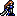

Character Overview
Matcha is the first swordfighter/myrmidon/mercenary to join your group in Chapter 4. She has decent bases, good growths, and an interesting
promotion which might increase your interest in her.
This unit is pretty reliable despite not having any notable skills, PRF's, or even amazing hidden stats. Matcha is quite good
in the Manster chapters in the early game since she pretty much doubles everything, although her base STR might give her some trouble. Her
low sword rank and STR might handicap her a bit, but it can be increased reliably as long as you're always deploying her and using her for combat.
Equipped with the Vantage skill and a commendable PCC, Matcha can turn out to be a good fighter, but is often overshadowed by other, arguably
more powerful units despite her ability to promote into a Hero and use axes. More on that later.
Out of all the swordfighters, Matcha might be the one with the least amount of potential, but don't let that dissuade you from using her.
She's a perfectly reliable unit with good combat potential.
Base Stats and Growths
| Level 2 Swordfighter  | HP | STR | MAG | SKL | SPD | LCK | DEF | CON | MOV |
|---|---|---|---|---|---|---|---|---|---|
| Base Stats | 24 | 4 | 1 | 10 | 11 | 6 | 4 | 6 | 6 |
| Growth Rates | 60% | 30% | 10% | 55% | 60% | 35% | 25% | 10% | 2% |
Matcha's base stats aren't jaw-dropping, but some of them give her great advantages. Her base 11 SPD is high enough for her to double almost every enemy in the Manster chapters, and it will increase quite well with its high 60% growth rate. Her base 4 DEF is fine, since many early-game units have low DEF, but with the 25% growth, Matcha will be able to level up a few points of DEF naturally, especially since she begins at level 2, so there's lots of opportunities to level her stats. Her promotion is also quite valuable as well.
What kills Matcha's utility is her low STR. Because of this base stat, Matcha mostly relies on criticals to do any significant damage, and until you can get your hands on a Killing Edge, or any sword with at least 10-20 crit, Matcha won't really be a combat god. Regardless, she is invaluable in the Manster chapters because of her SPD.
Matcha's promotion also allows her to use axes, but her low CON makes it very difficult to wield them effectively. Using the Nál Scroll will greatly help her. More on that later.
Other Stats
| Weapon Ranks | Skills | PCC | Leadership Stars | Movement Stars | Promotion Gains |
|---|---|---|---|---|---|
 Vantage Vantage |
3 | 0 | 0 | STR + 3 / MAG + 1 / SKL/SPD + 2 / DEF + 3 / CON + 2 / Sword Rank + 1 / Axe Rank E |
Matcha's greatest feature is her "Hero" promotion. With it, she gains decent boosts to STR/SKL/SPD, as well as DEF/CON. SKL and SPD boosts will ensure that Matcha hits those stat caps, and the STR and CON bonuses allow her to wield axes better and do higher, overall damage. The bonus in DEF is also sorely needed. A sword rank is also helpful if you were struggling to get Matcha to use effective weapons. Matcha also gains an E rank in Axes, but that is so low that it's very difficult to get her anywhere. She has a PCC of 3, so she can wield Killer Axes very effectively, but they are C rank, so Matcha needs 2 whole axe ranks to be able to wield them. There's really no shortcuts to increasing weapon ranks, so if you wish to go crazy with axes on Matcha, you'll need to train her quite hard.
A PCC of 3 means that Matcha excels with killer weapons, as they are pretty much a necessity for her. Master weapons are also great for Matcha because of her Vantage skill. If her STR is high enough, Matcha can kill enemies before they hit her. This won't happen right when you recruit her, though, so Matcha's enemy phase potential won't really come out until you give her weapons with the "Brave" effect, or if she gets some lucky crits.
Other than that, Matcha's other stats aren't anything noteworthy. 0 leadership/movement stars and a D rank in swords might be troublesome, but Matcha's PCC and Vantage skill can be useful.
PRF's and Support Bonuses
| This unit does not have any PRFs. |
|---|
Supports: Brighton
Supported by: None
Character Tips
The most useful scroll to give Matcha is probably the Nál Scroll, since she requires high CON to negate the attack speed losses when attacking with heavier axes. If you don't decide to train her axe rank, then all Matcha really needs to excel is the appropriate scrolls to boost the stats she's falling behind in. Dain for DEF, Ced for SPD, Hoðr for HP, Njörun for STR, these are the scrolls that will be useful to Matcha if no one else is in dire need of them.
Stat rings are also helpful for Matcha, and feel free to give 1 or 2 to her if she ends up falling behind in a stat. Only do this if you really want to use Matcha, though.